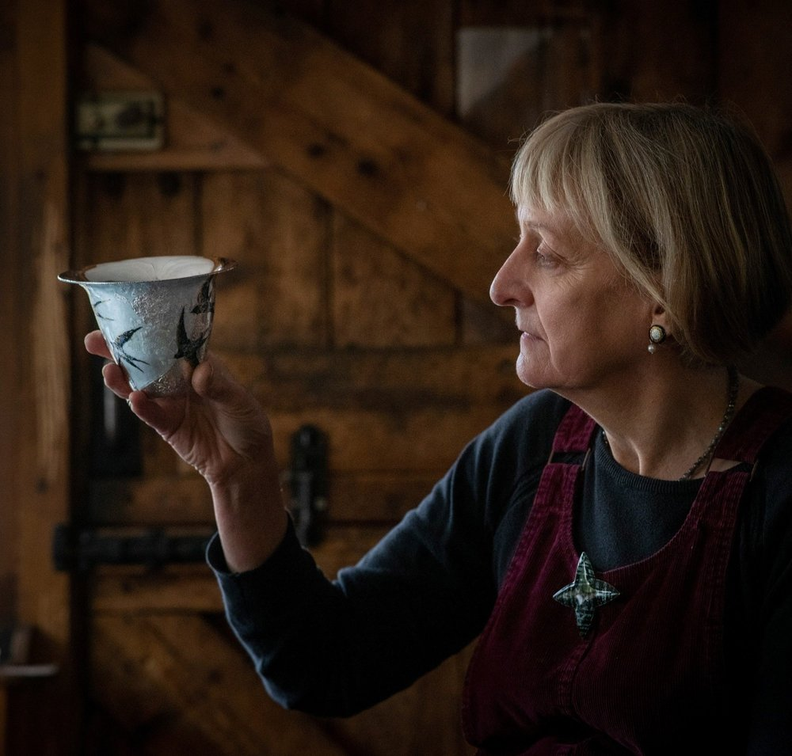
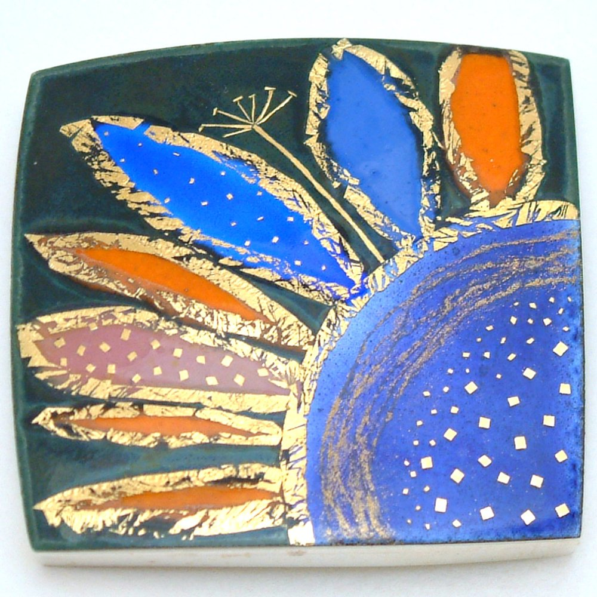
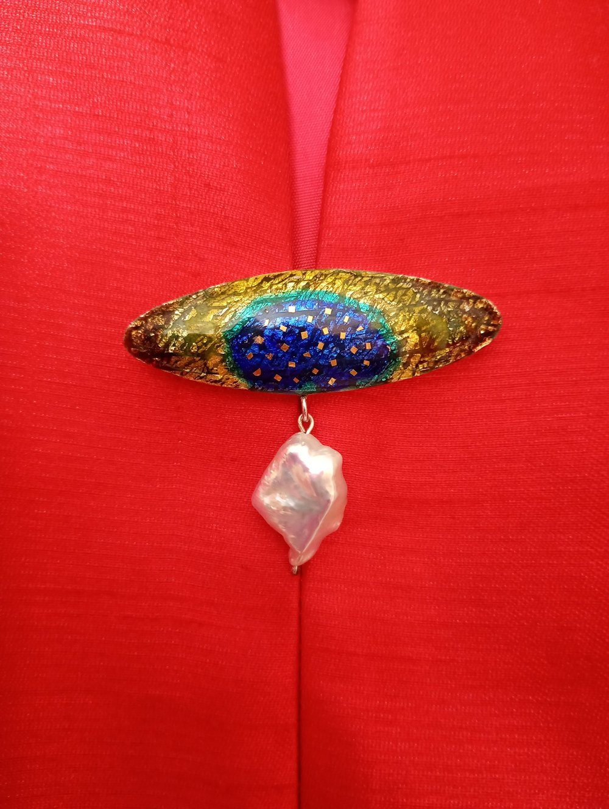
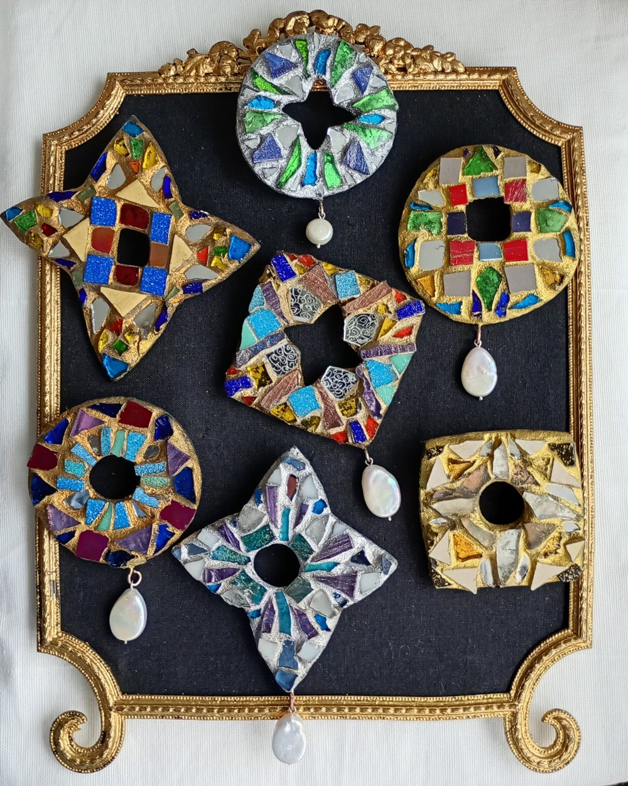

Sheila McDonald
Hey Nicki. This is the artist who made your brooch. Isn't her work lovely?
Your brooch
A highly unusual Scottish contemporary silver and enamel brooch formed as a stylised bird in flight.
Striking deep blue vitreous enamel highlighted with teal and ochre, with textural detail in fine gold and silver leaf.
- Artist
- Sheila McDonald (b. 1958)
- Maker's mark
- SMcD
- Hallmarked
- London, 2010
- Code
- GF-03/26V
- Provenance
- Purchased from the artist, 2010
The artist

Sheila McDonald (b. 1958) is a Scottish jewellery designer. She studied Textile Design at Glasgow School of Art and Jewellery at the Royal College of Art in London.
She set up a workshop with her husband Rod Kelly, silversmith, and most of her work features a strong textile influence combining many different enamelling techniques.
She now works from Beaverhall Studios in Edinburgh, primarily in silver, gold and vitreous enamel. She is a Freeman of the Goldsmiths' Company, teaches enamelling at West Dean College and is the author of Creative Enamelling, published by Crowood.


